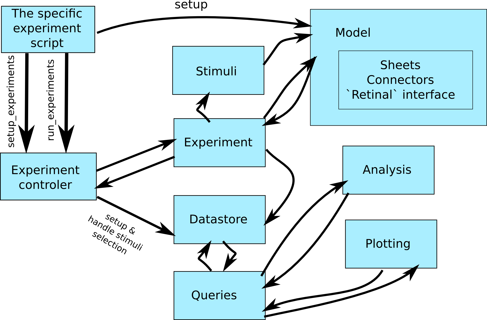

Introduction¶
mozaik is an integrated workflow framework for large scale neural simulations, intended to relieve users from writing boilerplate code for projects involving complex heterogenous neural network models, complex stimulation and experimental protocols and subsequent analysis and plotting.
It is built on top of the following tools:
Mozaik currently covers the following main areas of the neural simulation workflow:
- High-level components for definition of topologically organized spiking networks (built on top of PyNN)
- Experiment control (description and execution of experiments)
- Stimulus definition framework
- Data storage (storage of recordings and analysis results)
- Data manipulation (a query based system for performing high-level filtering operations over the datastore)
- Analysis module
- Plotting module
Tasks that we would like to cover in mozaik in future are:
- Support of FACETS-like benchmarks within the experiment control framework
- Versioning system built on top of Sumatra
- GUI for recording and analysis browsing and plotting
mozaik is currently subdivided into the core package and 10 subpackages:
- mozaik API - contains the core of the mozaik:
- core - The core API objects
- controller - the control center of mozaik workflows
- space - the input space handling
sheets Package - Code defining 2D sheets of neurons, one of the basic building blocks of mozaik networks
connector Package - Defines various connections between sheets
experiments Package - Defines the experiment interface
- models Package - code encapsulating a mozaik network consisting of sheets and connectors and providing
an ‘I/O’ interface to it. Currently it also contains retinal models (these might be reorganized in future).
stimuli Package - definition of stimulus interfaces
storage Package - data storage and data querying code
analysis Package - analysis code
visualization Package - plotting code
meta-workflow Package - code supporting meta-workflows, such as parameter searches
tools Package - utility code
This might change as mozaik grows, and code in the framework is likely to get separated into new sub-packages as it matures.
Scetch of how the control flows between the mozaik elements:
{kind=link}